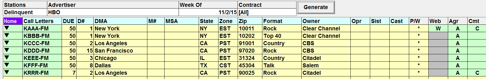
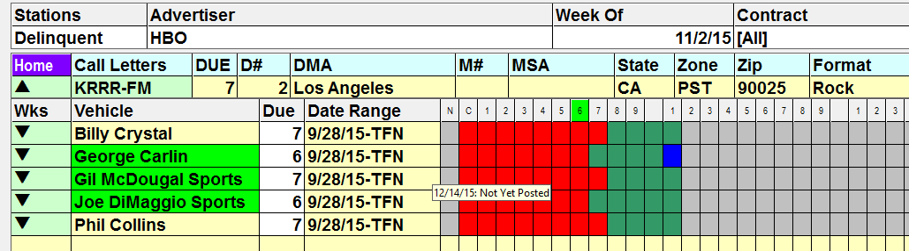
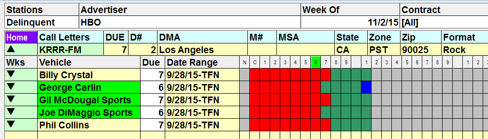
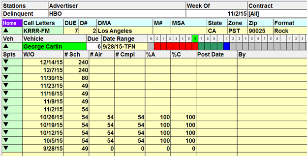
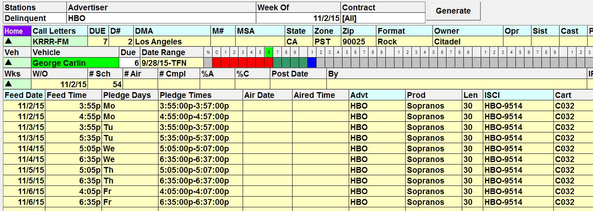

Compliance Information
After pressing the Generate button, the second part of the screen will be populated with compliance information like the Affiliate Management screen displays, with the stations that the advertiser/contract is airing on listed, along with information about the station.

Station Information
The following fields are shown:
- Call Letters
- Due: The number of weeks with affidavits that have not been returned out of the last 52 weeks. When viewing Station level data, the Due number is pulled from the vehicles affiliated with that station with the most number of affidavits that have not been returned.
- D#: DMA Rank
- DMA Name
- M#: MSA Rank
- MSA Name
- State
- Zone: Time zone
- Zip
- Format
- Owner
- Opr: Operator
- Sist: if part of a sister station, an asterisk will appear here.
- Cast: if part of a multicast group, an asterisk will appear here.
- P/W: if a station password is defined, an asterisk will appear here. Starting with version 8.1, if web version 3 is used, then this field is not shown, as web version 3 requires individual passwords for each station user account.
- Web: a “W” is shown here if a website address is defined for this station, otherwise this field is grayed out.
- Agr: Clicking the “A” in this field will bring up the agreement screen for this vehicle.
- Cmt: If there is a comment entered, the letter “C” will appear here. Clicking on the letter C will display the comment. When there is no comment present, clicking this field in this column will bring up the comment screen so that a comment can be entered.
The views can be expanded from the Station level to show vehicles and weeks, individual weeks, and the actual spots in the selected week by clicking the down arrows on the left side of the screen.
Abbreviations and Color Coding
The abbreviations used on this screen and the meaning of the different color coding that is used can be viewed by clicking and holding the mouse button on the key icon in the lower left.
The following colors are used to indicate the different statuses that are available when the view is expanded:
- Brown: not yet exported.
- Dark green: aired and compliant.
- Blue: not aired.
- Light blue: not compliant.
- Magenta: partially posted.
- Light magenta: regional copy.
- Red: not yet posted.
The different statuses can also be viewed by holding the mouse over the field, either on the week grid or the status field on the right side of the screen when the view is expanded to the Week or Spot level view.
In the example below, the mouseover text shows the week of 12/14/15 for George Carlin has not yet been posted.

Expanding the View
By clicking the arrow to the left of the Call Letters, the view can be expanded to show vehicles. This view shows all the vehicles that are associated with the selected station. The vehicles that the selected contract is airing on are indicated with a bright green background color. Similarly, the selected week is shown with a bright green background color in the week number grid.
In the example below, the selected contract is airing on the vehicles “George Carlin”, “Gil McDougal Sports”, and “Joe DiMaggio Sports”, as indicated by the bright green background color in the vehicle name field. The week of 11/2/15 is selected, and indicated with a bright green background color in week 6 on the grid.

Viewing Weeks
The vehicle level view can be expanded to show weeks by clicking the “Wks” arrow.

Viewing Spots
Clicking the “Spts” arrow will expand the view to show the individual spots (for the selected contract and week) as shown in the example below.

Returning to the Top Level View
At any time when navigating on this screen, pressing the Home button will return the view to the top level of information.
The different views on this screen work identically to the corresponding views on the Affiliate Management screen.